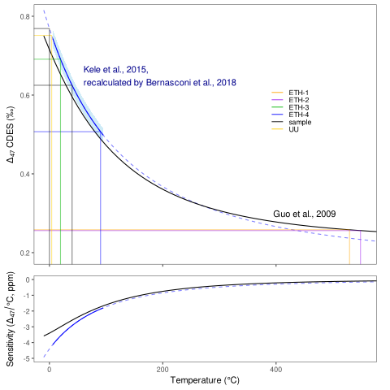
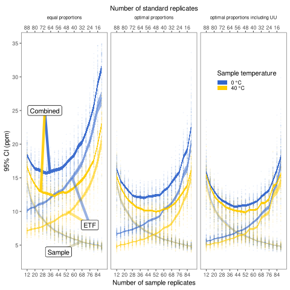
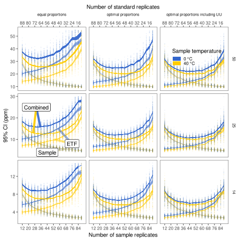
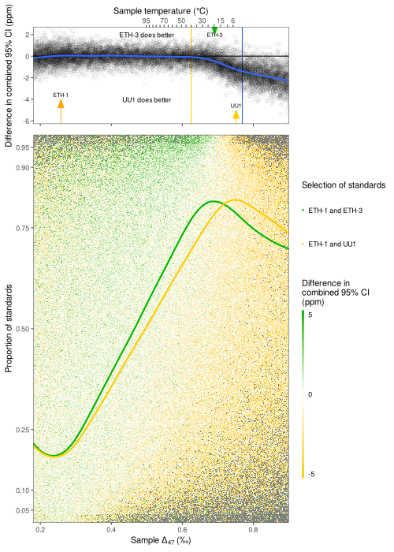

Simulation and plotting code for "Optimizing the use of carbonate standards to minimize uncertainties in clumped isotope data"
Table of Contents
- 1. r computational code nolatex
- 1.1. install required packages
- 1.2. optional packages
- 1.3. load libraries
- 1.4. multiple cores
- 1.5. set up plotting theme
- 1.6. set up stdinfo etc.
- 1.7. calculate temperature sensitivity as a function of temperature
- 1.8. create standard intro plot
- 1.9. micro benchmark
- 1.10. example sims
- 1.11. stddis
- 1.12. stdvssmp
- 1.13. prop-eth3
- 1.14. prop-eth3 with a very very very cold and hot standard?
- 1.14.1. prop-eth3 for continuous sample range
- 1.14.2. prop-eth3 expand experimental matrices and run simulations
- 1.14.3. run many sims
- 1.14.4. brrr_best_dat
- 1.14.5. smp_out_comb
- 1.14.6. prop_eth3_pl
- 1.14.7. calculate some summary statistics for use in-text
- 1.14.8. quick check on how much it matters if we add two hypothetical very large-range standards
1 r computational code nolatex
The supplementary code to the manuscript "Optimizing the use of carbonate standards to minimize uncertainties in clumped isotope data".
see github.com/japhir for potentially updated versions and Emacs org source files.
Please note that it takes quite some time to run all of the code, so if you want to evaluate it, make sure to do so line-by-line!
We set the seed here in an attempt to make these exact simulations
reproducible, but this only works for the next random sampling call. Thus, you
will not get identical results. Please load the included simulation output .rds
files to generate identical plots (see below).
set.seed(1563435)
1.1 install required packages
Install all below packages. Some of them (e.g. furrr) rely on the dev version
available on GitHub. Install them with
devtools::install_github("DavisVaughan/furrr")
Install the new package stdsim similarly, from
devtools::install_github("japhir/stdsim")
or point to the directory in which you downloaded the stdsim folder with
devtools::install_local("/path/to/stdsim")
1.2 optional packages
I use this for my theme.
devtools::install_github("baptiste/egg")
1.3 load libraries
We use the following packages for this project:
library(dplyr) # for piping (%>%), mutate, and nice data manipulation library(tidyr) # for making tibbles tidy, (gather, spread etc.) library(tibble) # a better thing than a dataframe library(ggplot2) # plotting library(tictoc) # to keep track of how long the functions took library(purrr) # functional programming to map variables from lists of dataframes library(magrittr) # only used once for extract, but original package of the pipe library(patchwork) # combine plots library(furrr) # furrr allows parallell purr functions w/ progress bars! library(stdsim) # the new R package created just for this paper!
1.4 multiple cores
run simulations on as many cores as possible. Note that I read somewhere that the random number generator gets less random when using multiple cores, but it is much faster and since I perform all simulations often this shouldn't effect the results.
plan(multiprocess)
1.5 set up plotting theme
We can use a different theme, but I like the one in the dev package egg.
Install it or ignore this section of code.
theme_set(egg::theme_article(base_size = 11, base_family="Helvetica"))
1.6 set up stdinfo etc.
This uses the default functions in stdsim to generate a tibble with standard and sample information. It doesn't add δ47 values by default since they differ between labs and are not important for these simulations.
eth.info <- make_std_table() smpinfo <- make_smp_info(c(0, 40)) stdev <- 14 # append d47 values based on actual measurement results for our MOTU eth.info$d47 <- c(15.6, -13.2, 16.2, -13.1, NA_real_)
1.6.1 setup axes
1.7 calculate temperature sensitivity as a function of temperature
Now we are interested in calculating the rate of change as a function of D47, so that we can calculate the change in temperature. So we take the derivative of the original T(D47) function.
tempcal_simplified <- function(Tc, slp=0.0449, int=0.167, kkelvin=273.15) { (slp * 1e6) / (Tc + kkelvin)^2 + int } tempcal_derivative <- function(Tc, slp=0.0449, int=0.167, kkelvin=273.15) { -((2 * slp * 1e6) / ((kkelvin + Tc) ^ 3)) } revcal_simplified <- function(D47, slp=0.0449, int=0.167, kkelvin=273.15) { sqrt((slp * 1e6) / (D47 - int)) - kkelvin } revcal_derivative <- function(D47, slp=0.0449, int=0.167) { (sqrt(-(slp * 1e6) / (int - D47))) / (2 * int - 2 * D47) }
See
?revcal ?tempcal
for the actual function documentation.
1.7.1 temp_sens_pot
Calculate the sensitivity of the temperature calibration at the relevant temperature range, so that we can add an estimate of uncertainty in the temperature domain to plots.
The \citeA{Kele2015} temperature calibration is only valid between 6 and 95 °C, so
# guo 2009 eqn. 18 # takes temperature in degrees celsius, converts to D47 guo_cal <- function(temp) { # convert degrees celsius to kelvin x <- temp + kkelvin # apply polynomial fit -3.33040e9 / x^4 + 2.32415e7 / x^3 - 2.91282e3 / x^2 - 5.54042 / x + 0.23252 } # takes D47, converts to temperature in degrees celsius guo_deriv <- function(temp) { x <- temp + kkelvin (5.54042 * x^3 + 5825.64 * x^2 - 69724500 * x + 13321600000)/x^5 * 1000 }
Update standards to use Guo if ETH-1 or ETH-2. We hack it together by numerically solving it.
guo_temp <- tibble(Tc = rng, D47 = guo_cal(Tc)) eth1_new_temp <- guo_temp$Tc[[which(near(guo_temp$D47, eth.info$D47[[1]], tol = .0000005))]] eth2_new_temp <- guo_temp$Tc[[which(near(guo_temp$D47, eth.info$D47[[2]], tol = .0000005))]] guo_std_temp <- bind_rows(eth.info, smpinfo) %>% mutate(temp = case_when(id == "ETH-1" ~ eth1_new_temp, #802.812 - kkelvin, id == "ETH-2" ~ eth2_new_temp, #822.2 - kkelvin, TRUE ~ temp))
plot_temp <- sensdf %>% filter(Tc >= 6, Tc <= 95) %>% ggplot(aes(y = D47, x = Tc)) + geom_ribbon(aes(ymin = lwr, ymax = upr), fill = "skyblue", alpha = .4) + geom_line(colour = "blue", linetype = 2, alpha = .5, data = sensdf) + geom_line(colour = "blue") + ## geom_line(colour = "black", data = guo_temp) + stat_function(fun = guo_cal, colour = "black") + geom_segment(aes(x = -Inf, xend = temp, y = D47, yend = D47, col = id), alpha=.5, inherit.aes=FALSE, data = guo_std_temp) + geom_segment(aes(x = temp, xend = temp, y = -Inf, yend = D47, col = id), alpha=.5, inherit.aes=FALSE, data = guo_std_temp) + annotate("text", x = 60, y = .65, label = "Kele et al., 2015, \nrecalculated by Bernasconi et al., 2018", colour = "darkblue", hjust = 0) + annotate("text", x = 450, y = .3, label = "Guo et al., 2009") + scale_colour_manual(values = c(eth.info$col[-5], smpinfo$col[[1]], eth.info$col[[5]])) + labs(x = "Temperature (°C)", y = Delta[47] ~ "CDES (\u2030)") + coord_cartesian(ylim = c(.2, .8), xlim = c(0, 550)) + theme(axis.title.x=element_blank(), axis.text.x=element_blank(), legend.pos=c(.75, .6), legend.title = element_blank()) plot_sens <- sensdf %>% filter(Tc >= 6, Tc <= 95) %>% ggplot(aes(y = sens * 1e3, x = Tc)) + geom_line(colour = "blue", linetype = 2, alpha = .5, data = sensdf) + geom_line(colour = "blue") + stat_function(fun = guo_deriv, xlim = c(-10, 1000)) + coord_cartesian(ylim = c(-5, 0), xlim = c(0, 550)) + ## geom_vline(xintercept=c(0, 40), col="#ededed") + labs(x = "Temperature (°C)", y = "Sensitivity" ~ "(" * Delta[47] / "°C, ppm)") temp_sens_pl <- plot_temp + plot_sens + plot_layout(nrow=2, heights=c(3, 1)) temp_sens_pl

1.8 create standard intro plot
The standards as a function of composition
lims <- c(.15, .71) standards_plot <- ggplot(eth.info, aes(x = d47, y = D47.noacid, col = id, label = id)) + geom_point(size = 2, show.legend = F) + ## geom_label(show.legend = F) + ggrepel::geom_label_repel(size = 2.5, show.legend = FALSE) + # add UU1 standard geom_hline(yintercept = eth.info$D47.noacid[[5]], linetype = 2, col = eth.info$col[[5]]) + annotate("label", x = 1.225, y = eth.info$D47.noacid[[5]], label = eth.info$id[[5]], col = eth.info$col[[5]], size = 2.5) + scale_colour_manual(values = eth.info$col) + labs(colour = "", x = delta^{47}~"(SG vs WG PBL \u2030)", y = Delta[47] ~ "CDES" - "AFF (\u2030)") + scale_y_continuous(sec.axis = sec_axis(~ sqrt((0.0449 * 1e+6)/(. + kaff - 0.167)) - 273.15, "Sample temperature (°C)", temp_breaks, temp_labs)) + coord_flip(ylim=lims) + theme(axis.text.x.bottom=element_blank(), axis.title.x.bottom=element_blank()) ## coord_cartesian(clip = "off") + ## theme(legend.pos = c(.15, .85))
And the simulation input conditions illustrating the ETF.
stdevs <- c(14, 25, 50) / 1e3 xs <- .54 + c(0, .04, .08) ys <- rep(-.6, 3) standard_sample_data <- make_smp_info(c(0, 40)) %>% mutate(id=ifelse(temp == 40, "sample 1", "sample 2")) %>% ## mutate(id=paste(id, temp)) %>% bind_rows(eth.info) base_plot <- standard_sample_data %>% ggplot(aes(x = D47.noacid, y = rawcat, col = id, label = id)) + # add etf geom_abline(intercept = kintercept, slope = kslope, linetype = 1, size = 1, col = "gray") + # 50 ppm uncertainty pointrange geom_linerange(aes(ymin = rawcat - 50 * kslope / 1e3, ymax = rawcat + 50 * kslope / 1e3), size = 1, linetype = 1, alpha = .1) + # 25 ppm uncertainty pointrange geom_linerange(aes(ymin = rawcat - 25 * kslope / 1e3, ymax = rawcat + 25 * kslope / 1e3), size = 1, linetype = 1, alpha = .4) + # 14 ppm uncertainty pointrange geom_linerange(aes(ymin = rawcat - 14 * kslope / 1e3, ymax = rawcat + 14 * kslope / 1e3), size = 1, linetype = 1) + geom_point(size=2) + # create a manual legend with the different input uncertainties annotate("segment", x = xs, xend = xs, y = ys, yend = ys + stdevs * kslope, alpha = c(1, .4, .1)) + annotate("segment", x=xs, xend=xs + stdevs, y=ys, yend=ys, alpha=c(1, .4, .1)) + annotate("text", x = xs, y = ys - .02, label = c("14", "25", "50"), size = 2) + # add the input sample measurements ggrepel::geom_text_repel(force = 3, hjust = 1, nudge_y = .05, nudge_x = -.01, size=2.5, segment.color = NA) + # make it pretty, manual colour scale, samples are black scale_colour_manual( limits = standard_sample_data$id, values = standard_sample_data$col) + # nice axis labels labs( colour = "", x = Delta[47] ~ "CDES" - "AFF (\u2030)", y = Delta[47] ~ "raw (\u2030)" ) + scale_x_continuous(limits=lims) + theme(legend.pos = "none")
In the text we combine them using patchwork, to create figure 1.
standards_pl <- standards_plot + base_plot + plot_layout(nrow=2, heights = c(.4, .6)) standards_pl

1.9 micro benchmark
Calculate how long it takes for one simulation.
options(genplot = FALSE, verbose = FALSE) tpersim <- microbenchmark::microbenchmark(sim_stds(out = "cis", stdtable = eth.info)) %>% summary() %>% pull(mean) / 100 tpersim
1.10 example sims
We create some example simulations for fig. 2.
options(genplot=F, verbose=F) ## set up small inputs dataframe example_sims <- tibble( name=rep(c("Equal\nproportions", "Optimal\ndistribution", "Optimal\ndistribution + UU1"), 2), stdfreqs=rep(list(c(1, 1, 1, 1, 0), c(1, 1, 9, 0, 0), c(1, 1, 0, 0, 9)), 2), smpt=c(rep(0, 3), rep(40, 3))) %>% ## run sims with inputs dataframe mutate(res = purrr::pmap(select(., -name), sim_stds, stdev=25, out="all", stdn=50, smpn=50), # extract the default plots pl=purrr::map(res, plot_sim, graylines=F, point_alpha=.2, pointrange=T, labs=F, fixed=F), # add a row number for the next step exprow=1:n() %>% as.character()) # combine the smp and std outputs of each experiment, based on the row number six_example_sims <- example_sims$res %>% map_dfr("smp", .id="exprow") %>% bind_rows(example_sims$res %>% map_dfr("std", .id="exprow")) %>% left_join(example_sims, by="exprow")
We create the example plot
exmp_plot <- ggplot(six_example_sims, aes(x=D47.noacid, y=raw, col=id, fill=id)) + geom_smooth(aes(group=paste0(name, smpt)), method="lm", size=.1, fullrange=TRUE, data=filter(six_example_sims, id != "sample")) + geom_violin(alpha=.3, colour=NA, scale="count", width=.5, position=position_identity()) + geom_point(shape=1, alpha=.2, size=.3) + facet_grid(rows=vars(name), cols=vars(paste(smpt, "°C"))) + ## coord_fixed(xlim=c(.1, .8)) + coord_cartesian(xlim=c(.14, .75)) + scale_colour_manual("ID", ## limits = c(out$cond$stdtable$id, out$cond$smpinfo$id), limits = c(example_sims$res[[1]]$cond$stdtable$id, example_sims$res[[1]]$cond$smpinfo$id), ## values = c(out$cond$stdtable$col, out$cond$smpinfo$col)) + values = c(example_sims$res[[1]]$cond$stdtable$col, example_sims$res[[1]]$cond$smpinfo$col)) + scale_fill_manual("ID", limits = c(example_sims$res[[1]]$cond$stdtable$id, example_sims$res[[1]]$cond$smpinfo$id), values = c(example_sims$res[[1]]$cond$stdtable$col, example_sims$res[[1]]$cond$smpinfo$col)) + labs(x = Delta[47] ~ "CDES" - "AFF (\u2030)", y = Delta[47] ~ raw ~ "(\u2030)") + theme(legend.pos="top", legend.key.size=unit(3, "mm"), legend.text = element_text(size = 6), strip.text.y = element_text(size = 8, angle = 90)) exmp_plot
and the table for in the text:
tbl_exmp <- forplot_0 %>% bind_rows(forplot_40) %>% filter(expname %in% c("1:1:1:1:0", "1:1:9:0:0", "1:1:1:0:9")) %>% select(-stdfreqs, -exprow, -meanerr, -hascoldstandard) %>% group_by(expname, smpt, stdev) %>% ## nest() %>% summarize(err_mean = mean(smp, na.rm = TRUE) * 1e3, err_ci = qt((1 - .05), length(smp) - 1) * sd(smp, na.rm = TRUE) / sqrt(length(smp) - 1) * 1e3) %>% mutate(err_temp = err_mean / 1e3 / tempcal_derivative(smpt) %>% abs, err_temp_ci = err_ci / 1e3 / tempcal_derivative(smpt) %>% abs, ) %>% arrange(stdev, -err_mean) %>% ## bind_cols(map_dfr(.$data, ~ mean(smp))) %>% pivot_wider(id_cols = c(expname, stdev), names_from = smpt, values_from = c(err_mean, err_ci, err_temp, err_temp_ci)) %>% # change order of things mutate(Name = case_when(expname == "1:1:1:1:0" ~ "Equal proportions", expname == "1:1:9:0:0" ~ "Optimal distribution", expname == "1:1:1:0:9" ~ "Optimal distribution + UU1", TRUE ~ "wth")) %>% select(Name, expname, stdev, ends_with("_0"), ends_with("_40")) %>% as_tibble() %>% mutate( out_0_ppm = glue::glue("{round(err_mean_0, 2)} \\pm {round(err_ci_0, 2)}"), ## improv_0 = round(err_mean_0 / lead(err_mean_0), 2), ## improv_40 = round(err_mean_0 / lead(err_mean_0), 2), out_0_deg = glue::glue("{round(err_temp_0, 2)} \\pm {round(err_temp_ci_0, 2)}"), out_40_ppm=glue::glue("{round(err_mean_40, 2)} \\pm {round(err_ci_40, 2)}"), out_40_deg = glue::glue("{round(err_temp_40, 2)} \\pm {round(err_temp_ci_40, 2)}"), ) %>% ## rename for latex output select(Name, `Standard distribution`=expname, `\\sigma` = stdev, `0\\us\\celsius (ppm)` = out_0_ppm, ## `\\times` = improv_0, `40\\us\\celsius (ppm)`=out_40_ppm, ## `\\times` = improv_40, ## `0\\u `0\\us\\celsius (\\celsius)`=out_0_deg, `40\\us\\celsius (\\celsius)`=out_40_deg)
| Name | Standard distribution | σ | 0 °C (ppm) | 40 °C (ppm) | 0 °C (°C) | 40 °C (°C) |
|---|---|---|---|---|---|---|
| Equal proportions | 1:1:1:1:0 | 14 | 9.37 ± 0.12 | 7.21 ± 0.09 | 2.13 ± 0.03 | 2.46 ± 0.03 |
| Optimal distribution | 1:1:9:0:0 | 14 | 6.8 ± 0.09 | 5.58 ± 0.07 | 1.54 ± 0.02 | 1.91 ± 0.03 |
| Optimal distribution + UU1 | 1:1:1:0:9 | 14 | 6 ± 0.07 | 5.63 ± 0.07 | 1.36 ± 0.02 | 1.93 ± 0.02 |
| Equal proportions | 1:1:1:1:0 | 25 | 17.03 ± 0.24 | 12.89 ± 0.16 | 3.86 ± 0.05 | 4.41 ± 0.06 |
| Optimal distribution | 1:1:9:0:0 | 25 | 12.45 ± 0.18 | 10.24 ± 0.12 | 2.82 ± 0.04 | 3.5 ± 0.04 |
| Optimal distribution + UU1 | 1:1:1:0:9 | 25 | 10.86 ± 0.12 | 10.11 ± 0.1 | 2.46 ± 0.03 | 3.46 ± 0.04 |
| Equal proportions | 1:1:1:1:0 | 50 | 35.15 ± 0.57 | 26.35 ± 0.46 | 7.98 ± 0.13 | 9.01 ± 0.16 |
| Optimal distribution | 1:1:9:0:0 | 50 | 25.08 ± 0.44 | 20.1 ± 0.27 | 5.69 ± 0.1 | 6.87 ± 0.09 |
| Optimal distribution + UU1 | 1:1:1:0:9 | 50 | 22.09 ± 0.33 | 20.03 ± 0.28 | 5.01 ± 0.08 | 6.85 ± 0.1 |
1.11 stddis
To simulate the distribution of the standards we create a tibble of inputs for
sim_stds().
1.11.1 create a list of all possible stddis combinations
# the proportions we want each standard to get pr <- c(0, 1, 3, 9) # each standard gets these proportions in all possible combinations props <- expand.grid( `ETH-1` = pr, `ETH-2` = pr, `ETH-3` = pr, `ETH-4` = pr, UU1 = pr) %>% # we need at least 1|2 & 3|4|UU1 to be able to calculate an ETF # we need at least 1|2|4 & 3|4|UU1 to be able to calculate an ETF ## filter(`ETH-1` + `ETH-2` + `ETH-4` > 0 & `ETH-3` + `ETH-4` + `UU1` > 0) %>% # we need at least 1 standard filter(`ETH-1` + `ETH-2` + `ETH-4` + `ETH-3` + `ETH-4` + `UU1` > 0) %>% # calculate relative abundances mutate(sums = rowSums(.), f1 = `ETH-1` / sums, f2 = `ETH-2` / sums, f3 = `ETH-3` / sums, f4 = `ETH-4` / sums, fu = UU1 / sums) %>% # filter out the redundant ones distinct(f1, f2, f3, f4, fu, .keep_all = TRUE) %>% arrange(`ETH-1`, `ETH-2`, `ETH-3`, `ETH-4`, UU1) # convert the proportions to a list we can put in our experimental matrix props_list <- props %>% select(-c(sums, starts_with("f"))) %>% as.matrix() %>% split(seq(nrow(.)))
1.11.2 expand the whole grid
stddis <- expand.grid( smpt = c(0, 40), stdfreqs = props_list, # this uses the list created previously stdev = c(50, 25, 14)) %>% # we add an experiment name for plot labels and easy overview mutate(expname = map_chr(stdfreqs, paste, collapse = ":")) %>% # add cold standard logical for later filtering mutate(hascoldstandard = grepl("[[139]]", expname)) # repeat each experiment a hundred times megastddis <- stddis[rep(stddis %>% nrow() %>% seq_len(), 100), ] %>% # and add a row character for later merging of results mutate(exprow = as.character(seq_len(n())))
1.11.3 stddis runall
Note that we use the package future so that we can show a progress bar and use
multiple cores. One could also use purrr::pmap_dfr() which it's based on, here.
## I turn off plotting and info messages options(genplot = FALSE, verbose = FALSE) ## keep track of how long it takes message(nrow(megastddis), " simulations started at ", Sys.time()) ## very rough expected finish time (it's usually faster) message("expected to take until ", Sys.time() + tpersim * nrow(megastddis) / 4) ## track actual duration with tictoc tic("stddis total time") ## run sim_stds with parameters from mgstddis and global parameters after it stddis_cnf <- furrr::future_pmap_dfr( select(megastddis, smpt, stdfreqs, stdev), sim_stds, stdtable = eth.info, out = "cis", stdn = 50, smpn = 50, .id = "exprow", # append a row name id .progress=TRUE # show a progress bar ) %>% filter(id == "smp") %>% # filter output select(exprow, id, cv) %>% # select output spread(id, cv) %>% # make it wide format right_join(megastddis, by="exprow") # join it with experimental df toc() message("simulations ran until ", Sys.time())
Save the results so that we don't have to run the simulations every time.
saveRDS(stddis_cnf, "stddis_cnf_2019-06-17.rds")
Restore the results from previous simulations.
stddis_cnf <- readRDS("stddis_cnf_2019-06-17.rds")
1.11.4 arrange results for plot
We re-organize the dataframes and make a selection of the best results for 0 and 40 degrees.
# the mean error of equal proportions at 0 degrees normerr_0 <- stddis_cnf %>% filter(smpt == 0, expname == "1:1:1:1:0") %>% summarize(meanerr=mean(smp)) %>% pull(meanerr) idealerr_0 <- stddis_cnf %>% filter(smpt == 0, expname == "1:1:9:0:0") %>% summarise(meanerr = mean(smp)) %>% pull(meanerr) normerr_40 <- stddis_cnf %>% filter(smpt == 40, expname == "1:1:1:1:0") %>% summarize(meanerr=mean(smp)) %>% pull(meanerr) idealerr_40 <- stddis_cnf %>% filter(smpt == 40, expname == "1:1:9:0:0") %>% summarise(meanerr = mean(smp)) %>% pull(meanerr) forplot_0 <- stddis_cnf %>% filter(smpt == 0) %>% # append mean error per treatment to original dataframe group_by(expname) %>% summarise(meanerr = mean(smp, na.rm=TRUE)) %>% left_join(filter(stddis_cnf, smpt == 0), by = "expname") %>% # if there is no cold standard, it should be at least as good as normerr filter((!hascoldstandard & (meanerr <= normerr_0)) | # if there is a cold standard, it should be at least as good as idealerr (hascoldstandard & (meanerr <= idealerr_0))) %>% arrange(meanerr, expname) %>% ungroup() %>% # this is a hack to order the labels of a factor in a plot mutate(expname = factor(expname, unique(expname))) forplot_40 <- stddis_cnf %>% filter(smpt == 40) %>% # append mean error per treatment to original dataframe group_by(expname) %>% # note that we do not take into account sample temp.. summarise(meanerr = mean(smp, na.rm=TRUE)) %>% left_join(filter(stddis_cnf, smpt == 40), by = "expname") %>% # if there is no cold standard, it should be at least as good as normerr filter((!hascoldstandard & (meanerr <= normerr_40)) | # if there is a cold standard, it should be at least as good as idealerr (hascoldstandard & (meanerr <= idealerr_40))) %>% arrange(meanerr, expname) %>% mutate(expname = factor(expname, unique(expname)))
1.11.5 create barcharts for proportion axes
forplot_0_x <- forplot_0 %>% distinct(expname, .keep_all = TRUE) %>% unnest(cols=stdfreqs) %>% mutate(std = rep(c(paste0("ETH-", 1:4), "UU"), n()/5)) x_0 <- forplot_0_x %>% ggplot(aes(x = expname, y = stdfreqs, fill = std)) + geom_col(position="fill") + ## geom_text(aes(label = lab), y = .5, size = 2, ## data = mutate(forplot_0_x, ## lab = ifelse(expname %in% c("1:1:1:1:0", "1:1:9:0:0", "1:1:0:0:9"), expname, ""))) + scale_fill_manual(values=eth.info$col, guide = guide_legend(label.position = "top", direction = "horizontal", label.theme = element_text(size = 8, angle = 90, hjust = 0))) + scale_y_reverse(position = "right", expand = c(0, 0)) + labs(x = "Standard distribution", y = "ETH-1:2:3:4:UU1", fill = "") + ## labs(x = "Standard distribution", y = "ETH-<span style='color:orange'>1</span>:<span style='color:purple'>2</span>:<span style='color:#00B600'>3</span>:<span style='color:blue'>4</span>:<span style='color:#FFCD00'>UU1</span>") + coord_flip() + theme(axis.text = element_blank(), axis.ticks = element_blank(), plot.margin = margin(r = 0), axis.title.x = element_blank(), legend.pos = "top", legend.justification = 12, legend.spacing.x = unit(1, "mm"), ## legend.margin = margin(2, 0, 2, 0), legend.key.size = unit(2, "mm"))
forplot_40_x <- forplot_40 %>% distinct(expname, .keep_all = TRUE) %>% unnest(cols=stdfreqs) %>% mutate(std = rep(c(paste0("ETH-", 1:4), "UU"), n()/5)) x_40 <- x_0 %+% forplot_40_x + theme(axis.title.x = element_blank(), axis.title.y = element_blank(), legend.pos = "none")
1.11.6 stddis_pl
sub_vjust <- -7 sds <- tibble(expname = "1:0:9:1:0", sd = c(14, 25, 50), smp = c(.006, .012, .027) + .003, hascoldstandard = FALSE, smpt = 0) # create a plot stddis_pl_0 <- forplot_0 %>% ggplot(aes(x = expname, y = smp * 1e3, # error in ppm colour = factor(smpt), fill = factor(smpt))) + # theming labs(x = "Standard distribution", y = "Combined error of sample and ETF (95% CI, ppm)", fill = ktit_smpid, colour = ktit_smpid, shape = "Total standards") + scale_fill_manual(values = kcols[[1]], labels = "0 °C") + scale_colour_manual(values = kcols[[1]], labels = "0 °C") + scale_y_continuous(breaks = seq(0, 65, 10), lim = c(5, 40), sec.axis = sec_axis("Combined error of sample and ETF (95% CI, °C)", trans = ~. / abs(tempcal_derivative(0) * 1e3), breaks = seq(0, 20, 2))) + theme( plot.title = element_text(hjust = 0.5, vjust = -10), plot.margin = margin(l = 0), ## plot.subtitle = element_text(size = 8, hjust = -.1, vjust = -8), axis.title.x.top = element_text(hjust = 7), axis.title.x.bottom = element_text(hjust = 7), axis.text.y = element_blank(), axis.ticks.y = element_blank(), axis.title.y = element_blank(), strip.text = element_blank(), legend.position = "none") + # manual legend for input stdevs (sigma) # the actual data geom_point(alpha = .03) + ## annotate("text", x = -Inf, y = Inf, label = paste0("\u3c3 = ", c(14, 25, 50))) + geom_text(aes(label = sd), data = sds, colour = "black") + coord_flip(clip = "off") + stat_summary(aes(group=stdev), geom="ribbon", fun.data=mean_cl_normal, fun.args=list(conf.int=0.95), alpha=.4, colour=NA) + stat_summary(aes(group=stdev), geom="line", fun.data=mean_cl_normal) + labs(title="0 °C sample") #, subtitle = "ETH-1:2:3:4:UU1") # add the average lines +- 95% CIs for all the sample temperatures stddis_pl_40 <- forplot_40 %>% filter(smpt == 40) %>% ggplot(aes(x = expname, y = smp * 1e3, # error in ppm colour = factor(smpt), fill = factor(smpt))) + # theming labs(x = "Standard distribution", y = "Combined error of sample and ETF (95% CI, ppm)", fill = ktit_smpid, colour = ktit_smpid, shape = "Total standards") + scale_fill_manual(values = kcols[[2]], labels = "40 °C") + scale_colour_manual(values = kcols[[2]], labels = "40 °C") + scale_y_continuous(breaks = seq(0, 65, 10), lim = c(5, 30), sec.axis = sec_axis("Combined error of sample and ETF (95% CI, °C)", trans = ~. / abs(tempcal_derivative(40) * 1e3), breaks = seq(0, 20, 2))) + theme( plot.title = element_text(hjust = 0.5, vjust = -10), plot.margin = margin(l = 0), plot.subtitle = element_blank(), axis.title = element_blank(), axis.text.y = element_blank(), axis.ticks.y = element_blank(), axis.title.y = element_blank(), strip.text = element_blank(), legend.position = "none") + labs(title="40 °C sample") + coord_flip(clip = "off") + # the actual data geom_point(alpha = .03) + stat_summary(aes(group=stdev), geom="ribbon", fun.data=mean_cl_normal, fun.args=list(conf.int=0.95), alpha=.4, colour=NA) + stat_summary(aes(group=stdev), geom="line", fun.data=mean_cl_normal) ## stddis_pl <- stddis_pl_0 + stddis_pl_40 + plot_layout(widths=c(35 / 25 , 1)) stddis_pl <- x_0 + stddis_pl_0 + x_40 + stddis_pl_40 + plot_layout(widths = c(.15, 35/25, .15, 1), ncol = 4)
stddis_pl

1.11.7 prep text
This generates some dataframes so we can easily extract relevant averages for use in-text.
stddis_exmp_0 <- forplot_0 %>% filter(smpt == 0) %>% group_by(expname) %>% summarize(err=mean(smp, na.rm=TRUE), cnf = confidence(smp, n(), alpha=0.05)) %>% arrange(err) stddis_exmp_40 <- forplot_40 %>% filter(smpt == 40, stdev == 25) %>% group_by(expname) %>% summarize(err=mean(smp,na.rm=TRUE), cnf=confidence(smp, n(), alpha= 0.05)) %>% arrange(err)
1.12 stdvssmp
Here we simulate the standards versus samples based on three input distributions,
1.12.1 setup
stdvssmp <- expand.grid( smpt = c(0, 40), stdn = as.integer(seq(12, 88, 4)), dist = c("equal proportions", "optimal proportions", "optimal proportions including UU1"), stdev = c(50, 25, 14)) %>% as_tibble() %>% mutate(smpn = as.integer(100 - stdn), n = as.integer(smpn + stdn), smpf = smpn / n, stdf = stdn / n, stdfreqs = case_when(dist == "equal proportions" ~ list(c(1, 1, 1, 1, 0)), dist == "optimal proportions" ~ list(c(1, 1, 9, 0, 0)), dist == "optimal proportions including UU1" ~ list(c(1, 1, 1, 0, 9)))) # repeat each experiment a hundred times megastdvssmp <- stdvssmp[rep(stdvssmp %>% nrow() %>% seq_len(), 100), ] %>% mutate(exprow = as.character(seq_len(n()))) # row number
1.12.2 run sims
# again, I turn off plotting and info messages options(genplot = FALSE, verbose = FALSE) # keep track of time message(nrow(megastdvssmp), " simulations started at ", Sys.time()) message("expected to take until ", Sys.time() + tpersim * nrow(megastdvssmp) / 4) # run duration tic("overview") # run sim_stds with parameters from megastdvssmp and global parameters after it stdvssmp_cnf <- furrr::future_pmap_dfr( select(megastdvssmp, smpt, stdn, stdev, smpn, stdfreqs), sim_stds, stdtable = eth.info, out = "cis", .id = "exprow", # append a row name id .progress=TRUE ) %>% filter(id %in% c("etf","sample", "smp")) %>% # filter output select(exprow, id, cv) %>% # select output spread(id, cv) %>% # make it wide format right_join(megastdvssmp) # join it with experimental df toc() message("simulations ran until ", Sys.time())
1.12.3 save results
saveRDS(stdvssmp_cnf, "stdvssmp_cnf_2019-06-13.rds")
stdvssmp_cnf <- readRDS("stdvssmp_cnf_2019-06-13.rds")
1.12.4 tidy it up
tidy_stdvssmp_results <- stdvssmp_cnf %>% gather(errortype, error, sample, etf, smp)
1.12.5 stdvssmp_pl
## create label annotation because the legend with opacity was unclear smpn=c(76, 44, 30) error=c(8, 4, 25) labels = c("ETF", "Sample", "Combined") leg <- tibble( ## x=c(58, 67, 28, ## 53, 62, 63), ## y=c(14.5, 5.5, 16, ## 10, 5.5, 12.5), x=rep(smpn, 2), y=rep(error, 2), xend=c(58, 67, 35, 53, 67, 26), yend=c(15, 5.5, 16, 10, 5.5, 13), smpt=c(rep(0, 3), rep(40, 3)), stdev = 25, ## lab=paste(labels, "uncertainty at", smpt, "°C"), lab=rep(labels, 2), errortype = rep(c("etf", "sample", "smp"), 2), dist=rep("equal proportions", 6)) ## smpt=0) stdvssmp_pl <- ggplot(tidy_stdvssmp_results %>% filter(stdev == 25), aes(x = smpn, y = error * 1e3, fill = as.factor(smpt), colour = as.factor(smpt), alpha = as.factor(errortype))) + # draw the points for all simulations, but make them very vague geom_point(alpha = .05, size = .3) + # draw an error range through the different experiments stat_summary(geom = "ribbon", colour = NA, # no border fun.data = mean_cl_normal, fun.args = list(conf.int = .95, na.rm = TRUE)) + # draw an average through the different experiments stat_summary(geom = "line", fun.data = mean_cl_normal) + # three standard distributions on the x-facets, 3 standard deviations on y ## we add some ugly labels here because they are more clear than a legend in this case geom_segment(aes(x=x, xend=xend, y=y, yend=yend), data=leg, size=2, show.legend=F) + geom_label(aes(x=x, y=y, label=lab), data=leg, colour="black", fill="white", alpha=1, show.legend=F) + facet_grid(#rows = vars(stdev), ## rows = vars(stdev), cols = vars(dist), as.table = FALSE, ## shrink = TRUE, ## scales = "free_y", ## space = "free_y" ) + # x-axes scale_x_continuous("Number of sample replicates", lim = c(10, 90), breaks = seq(12, 88, 8), sec.axis = sec_axis(~ 100 - ., name = "Number of standard replicates", breaks = seq(88, 12, -8))) + scale_y_continuous("95% CI (ppm)", ## trans="log10", limits = c(3, 35), breaks = c(seq(0, 50, 5), seq(60, 100, 10)), ## sec.axis = sec_axis(~. / abs(tempcal_derivative(0) * 1e3), name = "Approximate error (°C)", ## breaks=c(seq(0, 20, 1), seq(25, 40, 5))) ) + ## coord_trans(y = "log10") + # colours scale_colour_manual(ktit_smpid, labels = klab_smpid, values = kcols) + scale_fill_manual(ktit_smpid, labels = klab_smpid, values = kcols) + scale_alpha_manual("Source of Error", labels = c("ETF", "Sample", "Combined"), values = c(.5, .2, .9), guide=FALSE) + # theming ## annotation_logticks(sides="l") + theme(legend.position = c(.85, .8), strip.text=element_text(size=8), strip.placement="outside") stdvssmp_pl

1.12.6 supplementary figure plot with all input standard deviations
we use a new package that allows different scales on different facets
devtools::install_github("zeehio/facetscales")
stdvssmp_pl_all <- ggplot(tidy_stdvssmp_results, aes(x = smpn, y = error * 1e3, fill = as.factor(smpt), colour = as.factor(smpt), alpha = as.factor(errortype))) + # draw the points for all simulations, but make them very vague geom_point(alpha = .05, size = .3) + # draw an error range through the different experiments stat_summary(geom = "ribbon", colour = NA, # no border fun.data = mean_cl_normal, fun.args = list(conf.int = .95, na.rm = TRUE)) + # draw an average through the different experiments stat_summary(geom = "line", fun.data = mean_cl_normal) + # three standard distributions on the x-facets, 3 standard deviations on y ## we add some ugly labels here because they are more clear than a legend in this case geom_segment(aes(x=x, xend=xend, y=y, yend=yend), data=leg, size=2, show.legend=F) + geom_label(aes(x=x, y=y, label=lab), data=leg, colour="black", fill="white", alpha=1, show.legend=F) + facetscales::facet_grid_sc( rows = vars(stdev), cols = vars(dist), as.table = FALSE, shrink = TRUE, scales = list( y = list(`14` = scale_y_continuous("95% CI (ppm)", lim = c(2, 15)), `25` = scale_y_continuous("95% CI (ppm)", lim = c(3, 30)), `50` = scale_y_continuous("95% CI (ppm)", lim = c(9, 55))) ), ## space = "free_y" ) + # x-axes scale_x_continuous("Number of sample replicates", lim = c(10, 90), breaks = seq(12, 88, 8), sec.axis = sec_axis(~ 100 - ., name = "Number of standard replicates", breaks = seq(88, 12, -8))) + ## scale_y_continuous(, ## ## trans="log10", ## ## limits = c(NA, 50), ## breaks = c(seq(0, 50, 5), seq(60, 100, 10)), ## ## sec.axis = sec_axis(~. / abs(tempcal_derivative(0) * 1e3), name = "Approximate error (°C)", ## ## breaks=c(seq(0, 20, 1), seq(25, 40, 5))) ## ) + ## coord_trans(y = "log10") + # colours scale_colour_manual(ktit_smpid, labels = klab_smpid, values = kcols) + scale_fill_manual(ktit_smpid, labels = klab_smpid, values = kcols) + scale_alpha_manual("Source of Error", labels = c("ETF", "Sample", "Combined"), values = c(.5, .2, .9), guide=FALSE) + # theming ## annotation_logticks(sides="l") + theme(legend.position = c(.85, .85), strip.text=element_text(size=8), strip.placement="outside") stdvssmp_pl_all

1.13 prop-eth3
In the discussion we create a new set of simulations.
1.13.1 prop-eth3 for continuous sample range
new_smp_info2 <- tibble(smpid = "smp", smp_D47 = seq(0.18, 0.9, 0.0025)) %>% mutate(smp_D47.noacid = smp_D47 - kaff, rawcat = smp_D47.noacid * kslope + kintercept, smpt = revcal(smp_D47, ignorecnf = TRUE)) prop_eth3 <- seq(.02, .98, length.out = 500)
1.13.2 prop-eth3 expand experimental matrices and run simulations
mat <- expand.grid(smp_D47 = new_smp_info2$smp_D47, prop_eth3 = prop_eth3) %>% left_join(new_smp_info2, by = "smp_D47") %>% mutate(prop_left = 1 - prop_eth3, exprow = as.character(seq_along(1:n()))) %>% mutate(stdfreqs = select(., prop_eth3, prop_left) %>% as.matrix() %>% split(seq(nrow(.)))) %>% select(-prop_left)
- run many sims
smp_out <- furrr::future_pmap_dfr( select(mat, stdfreqs, smpt), sim_stds, ## here we subset the standards to ETH-3 and ETH-1, in that order stdtable = make_std_table()[c(3, 1), ], stdev = 25, out = "cis", .id = "exprow", .progress = TRUE) %>% filter(id %in% c("etf","sample", "smp")) %>% # filter output select(exprow, id, cv) %>% # select output spread(id, cv) %>% # make it wide format right_join(mat, by = "exprow") %>% # join it with experimental df mutate(exp="ETH-1 and ETH-3")
- save results
saveRDS(smp_out, "smp_out_new_2019-06-12.rds")
smp_out <- readRDS("smp_out_new_2019-06-12.rds")
1.13.3 smp_out_uu
smp_out_uu <- furrr::future_pmap_dfr( select(mat, stdfreqs, smpt), sim_stds, # here we subset the standards to ETH-3 and ETH-1, in that order stdtable = make_std_table()[c(5, 1), ], stdev = 25, out = "cis", .id = "exprow", .progress = TRUE) %>% filter(id %in% c("etf","sample", "smp")) %>% # filter output select(exprow, id, cv) %>% # select output spread(id, cv) %>% # make it wide format right_join(mat, by = "exprow") %>% # join it with experimental df mutate(exp="ETH-1 and UU1")
saveRDS(smp_out_uu, "smp_out_uu_2019-06-12.rds")
smp_out_uu <- readRDS("smp_out_uu_2019-06-12.rds")
1.13.4 best_dat
best_range <- 1:10 best_dat <- bind_rows(smp_out, smp_out_uu) %>% group_by(exp, smp_D47) %>% arrange(smp) %>% slice(best_range)
1.13.5 smp_out_comb
combine the sims for one plot with faceting
smp_out_comb <- smp_out %>% bind_rows(smp_out_uu) %>% select(exprow, smp_D47, prop_eth3, exp, smp) %>% spread("exp", "smp") %>% mutate(diff=`ETH-1 and UU1` - `ETH-1 and ETH-3`)
1.13.6 prop_eth3_pl
- plot_best
- plot_prop
- combine and print
prop_eth3_pl <- plot_best + plot_prop + plot_layout(nrow=2, heights=c(.2, .8)) prop_eth3_pl

- 3d rayshader plot
This one is not included in the manuscript or the supplementary information pdf, but I highly recommend creating one to play around with it!
# new rayshader 3d option # remotes::install_github("tylermorganwall/rayshader") library(rayshader) ray <- smp_out %>% ggplot(aes(x = smp_D47, y = prop_eth3, fill = smp * 1e3)) + geom_raster() + ## geom_smooth(aes(col = exp), se = F, method = "loess", span = .3, size = 1, ## data = best_dat) + ## geom_point(aes(col = exp), shape = 0, size = 1, alpha = .5, ## data = filter(best_dat, exp == "ETH-1 and ETH-3")) + labs(x = Sample~Delt[[47]]"CDES (\u2030)", y = "Proportion of standards", fill = "Combined 95% CI\n(ppm)") + viridis::scale_fill_viridis( ## the rescaler works nicely, but messes up the legend a bit ## rescaler = function(x, to = c(0, 1), from = NULL, newmax=30) { ## ifelse(x < newmax, ## scales::rescale(x, to = to, from = c(min(x, na.rm = TRUE), newmax)), 1)}, ## I'll go back to simple clipping again limits = c(NA, 30), expand=c(0, 0), ## oob = function(x) {x}, option = "magma", breaks = err_breaks, #labels = err_ticks ) + scale_y_continuous(expand = c(0, 0), breaks = c(.05, .1, .25, .5, .75, .9, .95)) + scale_x_continuous(expand = c(0, 0), lim=c(.18, .9), sec.axis = sec_axis(~ sqrt((0.0449 * 1e+6)/(. - 0.167)) - 273.15, "Sample temperature (°C)", temp_breaks, temp_labs)) + theme(legend.key.width = unit(.3, "cm"), legend.key.height = unit(2, "cm"), strip.placement="outside") plot_gg(ray, multicore=TRUE, width=5, height=7, scale=350, raytrace=TRUE, sunangle=40) ## render_movie("rayshader_movie_plot.mp4") render_snapshot("imgs/rayshader_snapshot.png")
See the screenshot for a preview

1.13.7 best_prop_diff_pl
The difference plot for the supplementary information.
best_dat_100 <- bind_rows(smp_out, smp_out_uu) %>% group_by(exp, smp_D47) %>% arrange(smp) %>% slice(1:100) best_dat_comb <- best_dat_100 %>% ungroup() %>% select(smp_D47, prop_eth3, exp, smp) %>% spread("exp", "smp") %>% mutate(diff=`ETH-1 and UU1` - `ETH-1 and ETH-3`)
plot_best_comb <- best_dat_comb %>% ggplot(aes(x = smp_D47, y = diff * 1e3)) + geom_hline(yintercept=0) + annotate("text", x = c(.5, .5), y = c(2, -4), label = c("ETH-3 does better", "UU1 does better"), size = 3) + geom_vline(xintercept=smpinfo$D47, col=kcols[1:2]) + ## show ALL the points? ## geom_point(shape = 16, alpha = .1, data=bind_rows(smp_out,smp_out_uu)) + geom_point(shape = 1, alpha = .1) + geom_smooth(method="loess", span = .3) + labs(col="Selection of standards", x = Sample ~ Delta[47] ~ "(\u2030)", y = "Difference in combined 95% CI (ppm)") + scale_colour_manual(values=eth.info$col[c(3, 5)]) + scale_x_continuous(expand=c(0, 0), lim=c(.18, .9), sec.axis = sec_axis(~ sqrt((0.0449 * 1e+6)/(. - 0.167)) - 273.15, "Sample temperature (°C)", temp_breaks, temp_labs)) + scale_y_continuous(expand = c(0, 0)) + ## add arrows to ETH-1 and ETH-3 positions annotate("segment", arrow = arrow(angle = 20, length = unit(.4, "cm"), type = "closed"), x = eth.info$D47[c(1, 3, 5)], y = c(-Inf, Inf, -Inf), xend = eth.info$D47[c(1, 3, 5)], yend = c(-4, 2, -5), colour = eth.info$col[c(1, 3, 5)], alpha = 1, size = .4) + annotate("text", x = eth.info$D47[c(1, 3, 5)], # + c(0.03, -.02), y = c(-4, 2, -5), label = eth.info$id[c(1, 3, 5)], vjust= c(-.5, .5, -.5), size = 2.5) + theme(legend.pos=c(.2, .7), ## shared axis with bottom panel axis.title.x.bottom=element_blank(), axis.text.x.bottom=element_blank())
plot_prop_diff <- smp_out_comb %>% ggplot(aes(x = smp_D47, y = prop_eth3, fill = diff * 1e3)) + geom_raster() + geom_smooth(aes(col = exp, fill=smp*1e3), se = F, method = "loess", span = .3, size = 1, data = best_dat_100) + ## geom_point(aes(col=exp), data=best_dat_100, shape = 1) + scale_colour_manual(values=eth.info$col[c(3, 5)]) + scale_fill_gradient2(low=eth.info$col[[5]], high=eth.info$col[[3]], breaks = err_breaks, limits=c(-5, 5)) + labs(x = Sample ~ Delta[47] ~ "(\u2030)", y = "Proportion of standards", col = "Selection of standards", fill = "Difference in\ncombined 95% CI\n(ppm)") + scale_y_continuous(expand = c(0, 0), breaks = c(.05, .1, .25, .5, .75, .9, .95)) + scale_x_continuous(expand = c(0, 0), lim=c(.18, .9)) + theme(legend.key.width = unit(.1, "cm"), legend.key.height = unit(1.5, "cm"), strip.placement="outside")
best_prop_diff_pl <- plot_best_comb + plot_prop_diff + plot_layout(nrow=2, heights=c(.2, .8)) best_prop_diff_pl

1.13.8 calculate some summary statistics for use in-text
# these are some helper functions to calculate the values we put in the text # get the confidence value at alpha value alpha from a t-distribution confidence <- function(x, n, alpha=.05) { qt(1 - alpha / 2, df=n - 1) * sd(x) / sqrt(n) } # convert x from permil to ppm and round down to dig digits. ppmround <- function(x, dig=2) { round(x * 1e3, digits=dig) } interp_eth3 <- best_dat %>% ungroup() %>% filter(exp=="ETH-1 and ETH-3", smp_D47 >= eth.info$D47[[1]], smp_D47 <= eth.info$D47[[5]]) %>% summarize(mean=mean(smp), ci=confidence(smp, n=n())) extrap_eth3 <- best_dat %>% ungroup() %>% filter(exp=="ETH-1 and ETH-3", smp_D47 >= eth.info$D47[[5]]) %>% summarize(mean=mean(smp), ci=confidence(smp, n=n())) interp_uu <- best_dat %>% ungroup() %>% filter(exp=="ETH-1 and UU1", smp_D47 >= eth.info$D47[[1]], smp_D47 <= eth.info$D47[[5]]) %>% summarize(mean=mean(smp), ci=confidence(smp, n=n())) extrap_uu <- best_dat %>% ungroup() %>% filter(exp=="ETH-1 and UU1", smp_D47 >= eth.info$D47[[5]]) %>% summarize(mean=mean(smp), ci=confidence(smp, n=n())) eth3_to_uu_eth3 <- best_dat %>% ungroup() %>% filter(exp=="ETH-1 and ETH-3", smp_D47 >= eth.info$D47[[3]], smp_D47 <= eth.info$D47[[5]]) %>% summarize(mean=mean(smp), ci=confidence(smp, n=n())) eth3_to_uu_uu <- best_dat %>% ungroup() %>% filter(exp == "ETH-1 and UU1", smp_D47 >= eth.info$D47[[3]], smp_D47 <= eth.info$D47[[5]]) %>% summarize(mean=mean(smp, na.rm = TRUE), ci=confidence(smp, n=n())) eth3_to_uu_tempsens <- seq(eth.info$D47[[3]], eth.info$D47[[5]], .01) %>% tempcal_derivative() %>% mean() uu_to_0_eth3 <- best_dat %>% ungroup() %>% filter(exp=="ETH-1 and ETH-3", smp_D47 >= eth.info$D47[[5]], smp_D47 <= smpinfo$D47[[1]]) %>% summarize(mean=mean(smp), ci=confidence(smp, n=n())) uu_to_0_uu <- best_dat %>% ungroup() %>% filter(exp=="ETH-1 and UU1", smp_D47 >= eth.info$D47[[5]], smp_D47 <= smpinfo$D47[[1]]) %>% summarize(mean=mean(smp), ci=confidence(smp, n=n())) uu_to_0_tempsens <- seq(eth.info$D47[[5]], smpinfo$D47[[1]], .01) %>% tempcal_derivative() %>% mean()
1.14 prop-eth3 with a very very very cold and hot standard?
The reviewers requested another set of simulations.
1.14.1 prop-eth3 for continuous sample range
same as before
new_smp_info2 <- tibble(smpid = "smp", smp_D47 = seq(0.18, 0.9, 0.0025)) %>% mutate(smp_D47.noacid = smp_D47 - kaff, rawcat = smp_D47.noacid * kslope + kintercept, smpt = revcal(smp_D47, ignorecnf = TRUE)) prop_eth3 <- seq(.02, .98, length.out = 500)
1.14.2 prop-eth3 expand experimental matrices and run simulations
same as before
mat <- expand.grid(smp_D47 = new_smp_info2$smp_D47, prop_eth3 = prop_eth3) %>% left_join(new_smp_info2, by = "smp_D47") %>% mutate(prop_left = 1 - prop_eth3, exprow = as.character(seq_along(1:n()))) %>% mutate(stdfreqs = select(., prop_eth3, prop_left) %>% as.matrix() %>% split(seq(nrow(.)))) %>% select(-prop_left)
1.14.3 run many sims
brrr <- make_std_table(id = c("UU2", "UU3"), col = c("darkblue", "red"), D47_std = c(0.9252, 0.0266)) # based on Wang 2004 brrr_smp_out <- furrr::future_pmap_dfr( select(mat, stdfreqs, smpt), sim_stds, ## here we subset the standards to ETH-3 and ETH-1, in that order stdtable = brrr, stdev = 25, out = "cis", .id = "exprow", .progress = TRUE) %>% filter(id %in% c("etf","sample", "smp")) %>% # filter output select(exprow, id, cv) %>% # select output spread(id, cv) %>% # make it wide format right_join(mat, by = "exprow") %>% # join it with experimental df mutate(exp="UU3 and UU2")
1.14.4 brrr_best_dat
best_range <- 1:10 brrr_best_dat <- bind_rows(smp_out, smp_out_uu, brrr_smp_out) %>% group_by(exp, smp_D47) %>% arrange(smp) %>% slice(best_range)
1.14.5 smp_out_comb
combine the sims for one plot with faceting
brrr_smp_out_comb <- bind_rows(smp_out, brrr_smp_out, smp_out_uu) %>% select(exprow, smp_D47, prop_eth3, exp, smp) %>% spread("exp", "smp") %>% mutate(diff=`UU3 and UU2` - `ETH-1 and ETH-3`)
1.14.6 prop_eth3_pl

1.14.7 calculate some summary statistics for use in-text
eth3_to_u2_eth3 <- brrr_best_dat %>% ungroup() %>% filter(exp=="ETH-1 and ETH-3", smp_D47 >= eth.info$D47[[3]], smp_D47 <= brrr$D47[[1]]) %>% summarize(mean=mean(smp), ci=confidence(smp, n=n())) eth3_to_u2_u2 <- brrr_best_dat %>% ungroup() %>% filter(exp=="UU3 and UU2", smp_D47 >= eth.info$D47[[3]], smp_D47 <= brrr$D47[[1]]) %>% summarize(mean=mean(smp), ci=confidence(smp, n=n())) eth3_to_u2_tempsens <- seq(eth.info$D47[[3]], brrr$D47[[1]], .001) %>% tempcal_derivative() %>% mean(na.rm=FALSE) u2_to_0_eth3 <- best_dat %>% ungroup() %>% filter(exp=="ETH-1 and ETH-3", smp_D47 >= smpinfo$D47[[1]], smp_D47 <= brrr$D47[[1]]) %>% summarize(mean=mean(smp), ci=confidence(smp, n=n())) u2_to_0_u2 <- brrr_best_dat %>% ungroup() %>% filter(exp=="UU3 and UU2", smp_D47 >= smpinfo$D47[[1]], smp_D47 <= brrr$D47[[1]]) %>% summarize(mean=mean(smp), ci=confidence(smp, n=n())) u2_to_0_tempsens <- seq(smpinfo$D47[[1]], brrr$D47[[1]], .01) %>% tempcal_derivative() %>% mean() eth3_to_0_eth3 <- brrr_best_dat %>% ungroup() %>% filter(exp=="ETH-1 and ETH-3", smp_D47 >= eth.info$D47[[3]], smp_D47 <= smpinfo$D47[[1]]) %>% summarize(mean=mean(smp), ci=confidence(smp, n=n())) eth3_to_0_u2 <- brrr_best_dat %>% ungroup() %>% filter(exp=="UU3 and UU2", smp_D47 >= eth.info$D47[[3]], smp_D47 <= smpinfo$D47[[1]]) %>% summarize(mean=mean(smp), ci=confidence(smp, n=n())) eth3_to_0_tempsens <- seq(eth.info$D47[[3]], smpinfo$D47[[1]], .01) %>% tempcal_derivative() %>% mean()
1.14.8 quick check on how much it matters if we add two hypothetical very large-range standards
(eth3_to_0_eth3$mean - eth3_to_0_u2$mean) * 1000
ppm difference, which equates to
# in permil # in permil # in permil / degreeC (eth3_to_0_eth3$mean - eth3_to_0_u2$mean) / eth3_to_0_tempsens
so .3 °C improvement for samples between \(-29.8000392923437\)
maybe it's even more at the more extreme end?
(eth3_to_0_eth3$mean - eth3_to_0_u2$mean) / eth3_to_0_tempsens
degrees improvement for samples between ETH-3 (~20) and 0 °C.
or in terms of improvement:
((eth3_to_0_eth3$mean / eth3_to_0_u2$mean) - 1) * 100